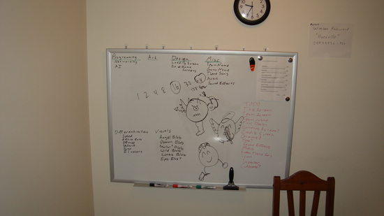
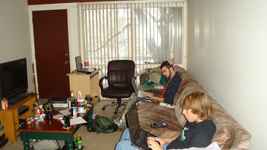
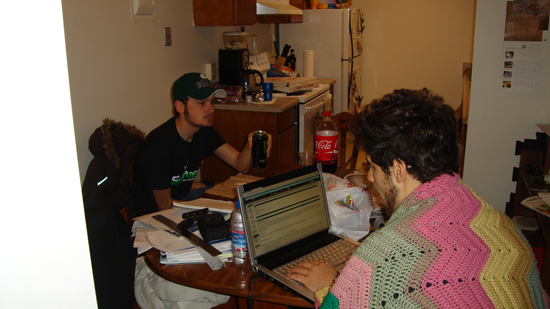

Back To The Future
Posted by Mathew on December 4th, 2008
Well, it's that time during my college career when I have to start thinking beyond the confines of the Engineering Building, and into what will hopefully become my future career. I keep telling myself that I'll wait until next semester to get really serious about speaking with employers, but I keep finding myself speaking with them now (with next week being finals week). Needless to say between finals, interviews, projects, and everything else it's been a bit stressful. Oh well, I'll just deal with it like any other stressful element... with youtube videos of puppies.
Posted in Rant
GameJamming
Posted by Mathew on November 21st, 2008
Thought I'd post that Spartasoft had another GameJam this past week, and it was as fun as they usually are (which is to say about 3 parts fun, 1 part stress, and 1 part sleep deprivation). Worked mostly with people I had worked with before (save for our audio guy) and overall it went very well. We took second place losing only to Charles Roman's game Ballz to the Wallz (link forthcoming) by 1 point.



Posted in Projects
Update
Posted by Mathew on October 23rd, 2008
So it's been a few weeks (like 6 or 7 or something) since I said I'd be making a game every few weeks this semester, and I have fallen dreadfully short of that goal. Between classes and GameJams I've almost made a game per month, but that's kind of cheating. Anyway, the semester has been busy enough to nearly crush my spirit, but I look forward to Christmas Break when hopefully I'll be able to actually get into some independent projects. In the meantime I should have some more class projects and GameJam projects to post between now and then.
Posted in Projects
Works in Progress
Posted by Mathew on September 4th, 2008
Started "pre-production" on my first personally driven XNA project of the school year, and I'm hoping it'll last more than a few days this time around. Our basic project goal is to make a series of games, each taking around 2 or 3 weeks to complete (less if possible) and all building on the same basic code base. The reason behind all of this? We'd like to build up a nice, stable, tested base of code to take with us to next semester's game jam against U of M.
The question I have now is whether or not I should post the project in progress as prototypes evolve. I've thought of adding some sort of updates system on the projects entries that would be appended to projects in a similar way to how comments are, but a little more integrated. I suppose I'll have to see how I feel about it about a week from now. Until then here's some funny vid I found featuring Mad TVs interpretation of Steve Jobs and the Mac-mania he generates. I'm personally a PC fanboy, but ordered an iPod Touch recently and couldn't be more excited to get it.
Posted in Projects
Entries, posts, articles, and projects
Posted by Mathew on August 26th, 2008
Finally finished adding all of my old projects, and fixing those that I had sloppily thrown together before. All in all this site is already making me more productive, which was part of the goal anyway.
If anyone is reading this feel free to look at the projects page, and leave some feedback on some of the stuff there. I know it's not quite AAA stuff... yet, but I think I'm getting there slowly.